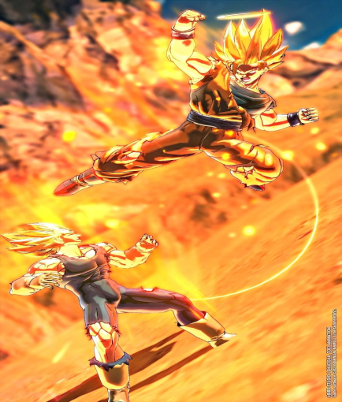

Dragon Ball Xenoverse
Dragon Ball Xenoverse (ドラゴンボール ゼノバース, Doragon Bōru Zenobāsu) é um jogo da franquia Dragon Ball desenvolvido pela Dimps para PlayStation 3, PlayStation 4, Xbox 360, Xbox One e Microsoft Windows através da Steam. O jogo contém elementos de Dragon Ball Online e Dragon Ball Heroes, além de continuar a história de Dragon Ball Online e alguns dos personagens de Xenoverse aparecerem em Dragon Ball Heroes. Várias vezes no jogo são mostradas cenas feitas em animações semelhantes a OVAs do anime para contar a história do jogo. Inicialmente o nome do jogo era Dragon Ball: New Project, anunciado com esse nome e algumas imagens de um guerreiro com cabelos avermelhados e roupas semelhantes a de Trunks do Futuro, mais tarde for revelado o nome Xenoverse, o protagonista chamado de Ace e que ele seria customizado ao gosto do jogador.
Jogabilidade
As batalhas acontecem em ambientes completamente 3D e com modelos destrutíveis. Os lutadores podem percorrer os níveis de livremente em espaços muito grandes e podem estar lutando em uma montanhas e cidades com vários obstáculos, ir no ar sem nenhum obstáculo enquanto gasta seu vigor para se manter e lutar na água dificultando a si e ao inimigo. Eles correm quando estão no chão e nadam debaixo d'água. Dragon Ball Xenoverse tem diálogos durante as lutas nas Missões Paralelas, e os lutadores mostram expressões faciais quando atacam o adversário ou causam dano. Além do medidor ki sempre estar presente, há um medidor de resistência verde que pode ser usado para desaparecer instantaneamente dependendo do seu uso, este é o medidor de vigor. Este medidor também pode ser usado por certos ataques super como o Kaioken.
Os jogadores têm liberdade para explorar o planeta Terra, retratado da forma como existe no universo Dragon Ball, juntamente com vários outros locais, incluindo uma misteriosa nova cidade, que é o ponto de origem do novo personagem do jogo, a Cidade Toki Toki. Como em todos os jogos de luta Dragon Ball Z desenvolvidos pela Dimps, em vez de escolher entre Goku na sua forma base e suas diferentes transformações Super Saiyajin, o poder e as habilidades do personagem podem ser gradualmente aumentados ao longo de cada partida quando se transformam no meio da batalha. No entanto, outros lutadores de várias formas como Frieza e Buu não são capazes de se transformar, pois suas transformações requerem muitas modificações físicas aos seus modelos de personagem e, como tal, todas as suas formas são personagens separados.
As batalhas geralmente ocorrem além do 1v1, assim como Dragon Ball Z: Battle of Z, porém o jogo vai até 3v3 (com exceção do modo história), enquanto Battle of Z ia até 4v4 (também com exceção do modo história).
Conteúdo
- As lutas podem ser até 3vs3 (durante determinadas missões podem chegar até 5 personagens estarem de um lado).
- Batalhas originais - participe em lutas épicas contra inimigos ferozes como Vegeta, Freeza, Cell e mais com o seu personagem.
- Personalização de personagens - os jogadores tem uma grande variedade de opções de personalização, incluindo recursos físicos das raças Humano, Majin, Namekuseijin, Saiyajin e Freeza. Em uma entrevista com Masayuki Hirano, um produtor da Bandai-Namco, havia afirmado que personagens personalizados poderão subir de nível (o limite de nível é 99 com a DLC 3), permitindo melhorias na habilidade. Cada classe também terá traços únicos e estatísticas iniciais, como Namekuseijins com maior cicatrização com itens e ganhando regeneração quando a saúde é baixa, Saiyajins tem baixa saúde e alto ataque e voltam mais forte quando eles são revividos.
- Torne-se um aprendiz - O personagem principal pode se tornar o aprendiz de personagens (heróis e vilões) da série Dragon Ball para ganhar seus movimentos especiais. Os jogadores podem ter apenas um Mestre por vez, embora possam mudar para um Mestre diferente e continuar treinando com um antigo a qualquer momento. Para se tornar o aluno de um personagem, eles precisam primeiro ser encontrados em algum lugar na cidade de Toki Toki. Eles então oferecerão para treinar o guerreiro, iniciando um teste de qualificação de treinamento no qual o aspirante a estudantes abaixe a saúde do mestrado para um determinado nível. À medida que a amizade com o Mestre atual aumenta, eles oferecerão missões de treinamento que recompensam novas habilidades após a conclusão delas. Depois de se tornar um aprendiz, o Mestre ocasionalmente parece se juntar ao aluno na batalha como personagem de apoio. Depois de completar o treinamento de um mestre, o aprendiz ensina a habilidade máxima de seu mestre e pode repetir novamente qualquer uma das missões de treinamento de um Mestre e, ocasionalmente, eles vão pedir uma Missão de Batalha. Os mestres também participam ocasionalmente durante as Missões Paralelas para ajudar seus alunos.
- Conectando com um Mestre através da Alma-Z - Depois de completar um treinamento do seu mestre e aprender sua habilidade final, personagens personalizados podem ativar uma Alma-Z usando o Ataque Máximo do mestre em batalha, durante o qual um flash "Z" estilizado e a Alma do mestre entra nele, fazendo o ataque mais poderoso.
Modos de jogo
Modo Universo
Também conhecido como "Modo História" ou "Modo Aventura", neste modo, o jogador vive uma nova história da série Dragon Ball Z desconhecida e alterada.[3] Durante os primeiros indícios do jogo, uma das coisas que mais chamaram a atenção era um guerreiro misterioso assistindo a primeira batalha entre Goku e Vegeta, isso colocou duvidas sobre quem seria o guerreiro.[4] Ele tem cabelo vermelho, um modelo mais atual de um rastreador e o logo da Corporação Cápsula na manga da jaqueta, esse
personagem é conhecido como o "Guerreiro do Futuro", e voltou a intervir nas lendárias batalhas da série para consertar suas distorções. Mais tarde em Dragon Ball Xenoverse 2, é revelado seu nome, Ace, apesar dele poder ser alterado pelo jogador durante a tela de criação, assim como sua aparência, raça e roupas.[5] A história acontece com a Patrulha do Tempo, liderada por Chronoa e Trunks, chamando um novo guerreiro (o jogador), para ajudá-los a combater as distorções históricas, que havia ficado frequente. Assim a história segue com Ace (o jogador) se desenvolvendo e consertando a história, passando por batalhas já vistas no anime.
Caso o jogador queira, ele pode refazer as missões quando quiser entrando na Cúpula do Tempo. As missões seguem ranks de D a Z, sendo D a pior performance e Z a melhor, esse rank é calculado durante a batalha.